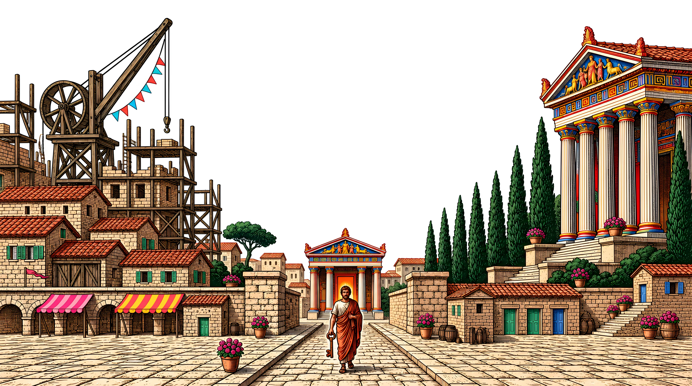
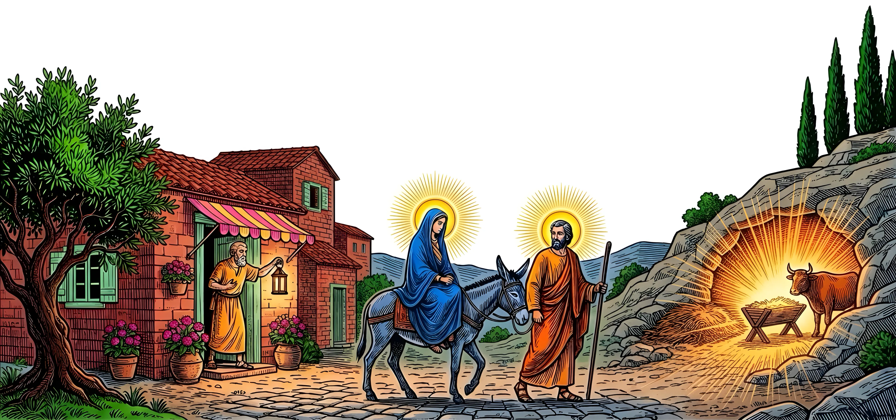
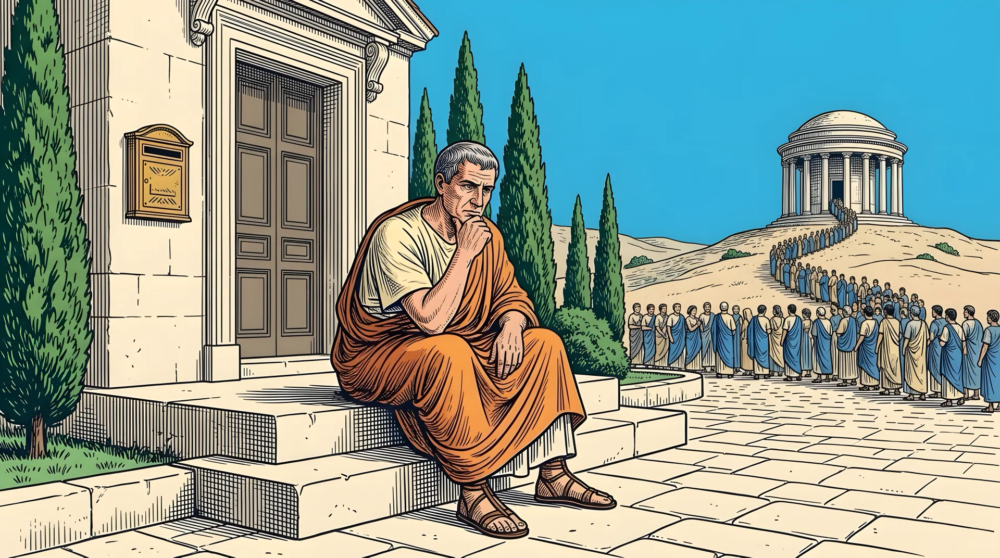
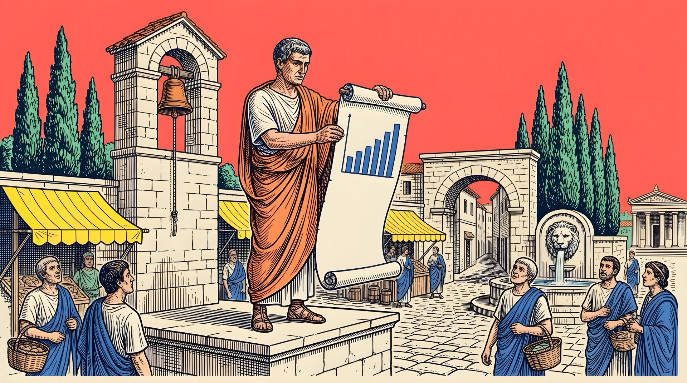
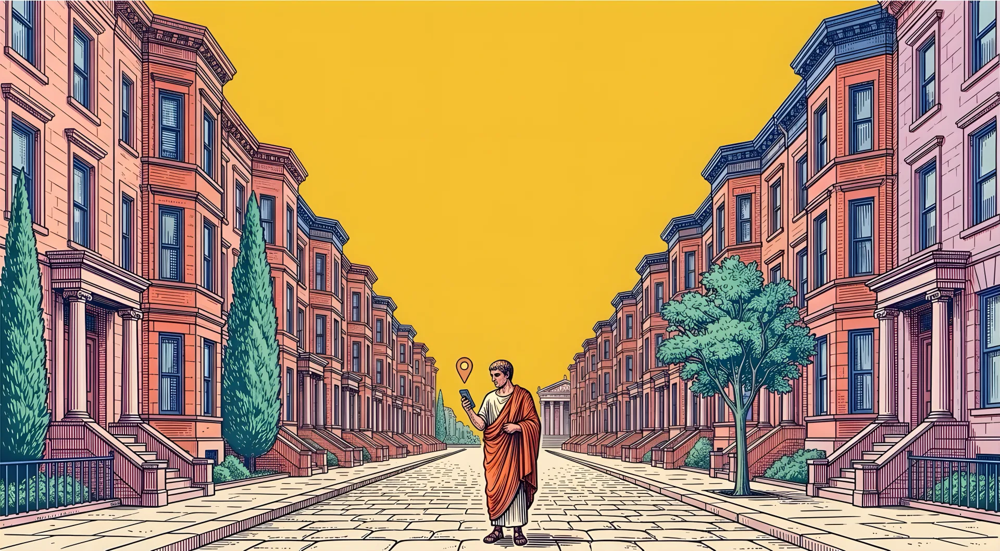
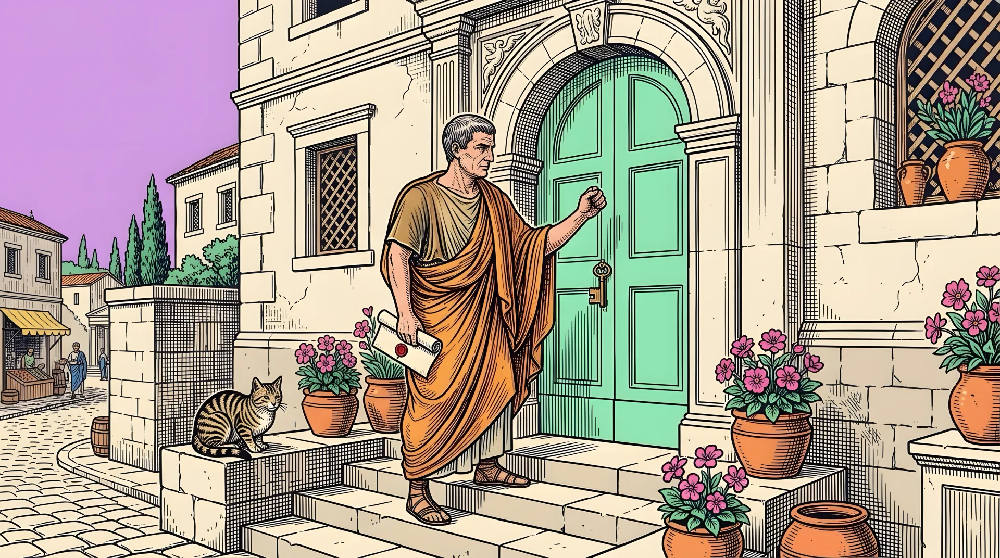
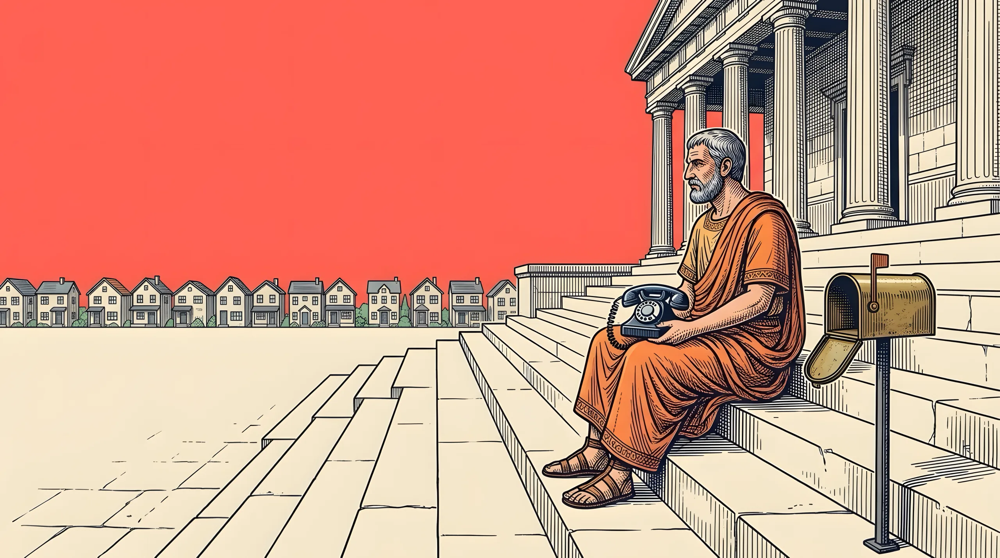
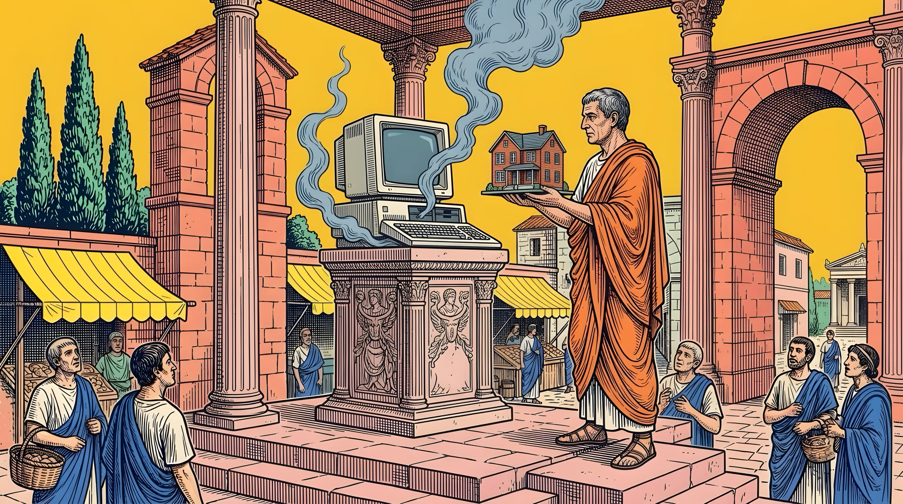
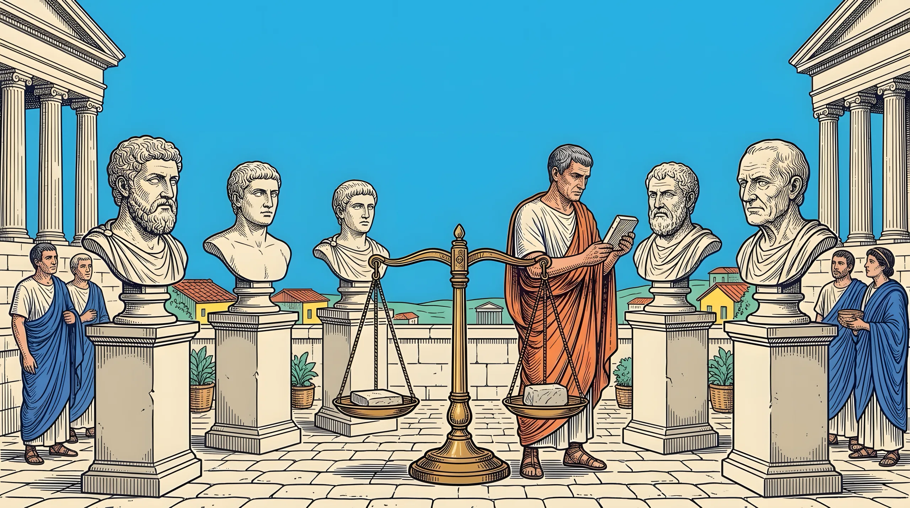
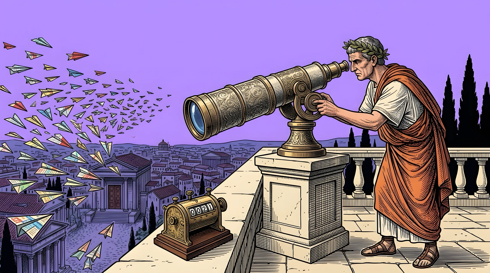

Citata.ai · visual style sheet · v2 · 2026-10-18
Neo-Renaissance pop
Parchment page, ink type, minium buttons, pop color blocks, engraved ancient towns. Rules: brand/DESIGN.md · images: brand/IMAGES.md · files: brand/art/current/.
01Colors
Base
Fresh page#FBF7EE · cards
Minium#C1410B · buttons, links
Pop accents
Full color for small loud things (stat cards, chips). Tints /15–/35 for panels and cards. Ink text on all of them.
02Type
GEO + AEO · for property management companies
Get named when landlords ask AI
Cal Sans 400–600 for everything readable. Paper Mono uppercase for labels and meta. No italic, no tight tracking.
Get a free AI visibility audit See how it works
03Components
Chapter chips
01The problem
02How it works
03Try it now
04Case study
Stat cards
−46%Google searches for property management, Chicago area
5managers named in a typical AI answer
12.1%of signups from AI, on 0.5% of visits
Cards and panels
01
Indexed
AI crawlers read every page.
02
Found
Pages answer what landlords ask.
03
Mentioned
AI names you, with a link.
04Case study panel
Sun /25 panel, 8px corners
Stamps
FAQ accordion
What is GEO for a property management company?
The work that gets AI assistants to name your company.
How is GEO different from SEO?
SEO ranks pages; GEO gets you named inside the answer.
04Images
T · Hero and footer

hero-v9 — three-ink engraving, white sky for the headline, pop accents, painted temple

footer-v8 — "no room at the inn", radiant halos, golden cave
N · Content images (flat pop sky)

problem · sky

report · coral

case · sun

cta · lilac

guide leads · coral

guide owners · sun

guide agencies · sky

guide track · lilac
05Do and don't
Do
- Give each section its own pop color block
- Say a thing once; prefer a number, card or image
- One filled minium button per view
- The man in the orange toga in every scene
- Keep SynthID and C2PA marks
Don't
- Pure white or pure black
- Parchment text on a pop color
- Text inside images
- Cut the art under the text, or put text on the art
- A visible "made with AI" label